CHARACTERS
Don't be alarmed at the quality of my
drawings. It's not easy drawing, inking, and scanning 40-something
people in one day so I had to sacrifice quality for speediness. Also
note that some characters are unavoidably larger than others which of
course means they're more likely to get hit, so I've considered
implementing a stat system for balancing purposes where each character
would get unique ratings for things like health, speed, accuracy,
proficiencies for different types of weapons, vehicles, kits, etc. Let
me know what you think.
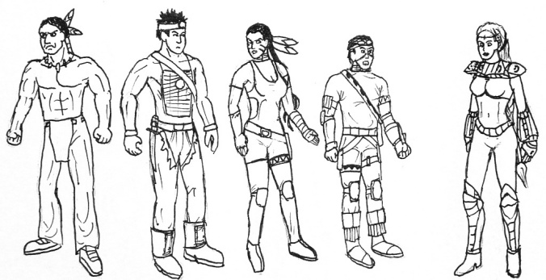
Fireseed
Once upon a time some
fragments of the energy of creation got trapped in some amber and
buried in the Bering Strait glacier. (hey! a tie to the Soldner
storyline!) Well on their way to the Americas, the ancestors of the
Fireseed family happed upon this object. This baby portaled to the Lost
Land, the sewer system of the dimensionally linked universe. To this
day, the lineage of the Fireseed family carries this "Light Burden" and
protects the Lost Land and the passageway to Earth from nasty
customers. Adon is like the ambassador of the Lost Land and helps out
the Turoks so I figure I might as well include her in this faction.
Tal'set
Joshua
Danielle
Joseph
Adon
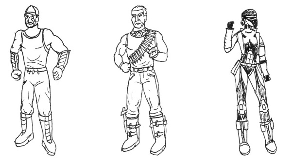
Hunters
Poacher
Longhunter
Syra
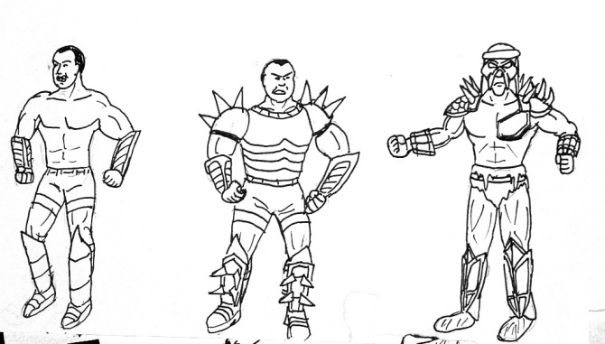
Campaigner's Military
Campaigner's Soldier
Campaigner's Sergeant
Campaigner
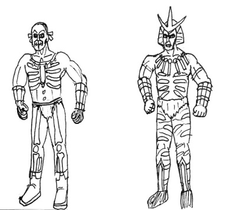
Ancients
Ancient Warrior
High Priest
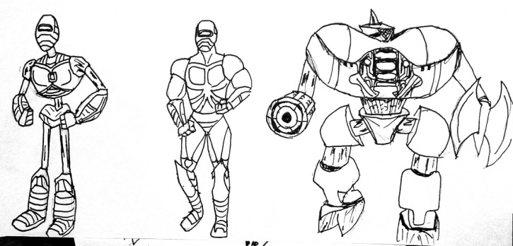
Cyborgs
Cyborg
Cyborg Sergeant
Attack Robot
Galyannan
Forces (no picture)
Adian Soldier
Araissian Soldier
These guys are mostly
seen as corpses lying around their respective hometowns in Turok 2. How
sad. Poor guys couldn't take on the lizards and left it all to Turok to
clean up. Well they have since vowed to not be so wimpy and to rise up
again to protect their homeland without the help of Turok. And they'll
have noses this time too.
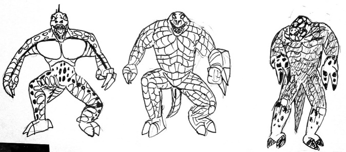
Dinosoids
Raptoid
Endtrail
Fireborn
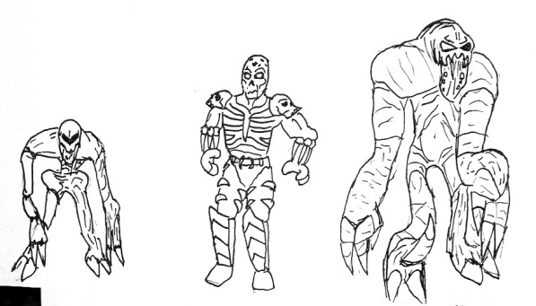
Deadkin
Deadmen
Demon
Lord of the Dead
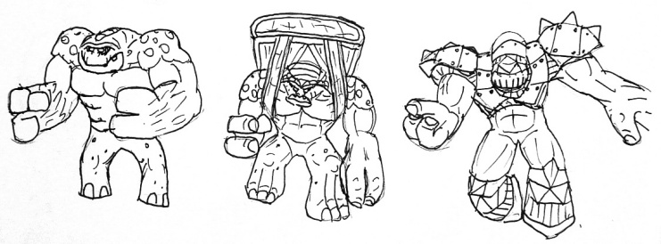
Pur-Linn
War Club
Gunner
Juggernaut
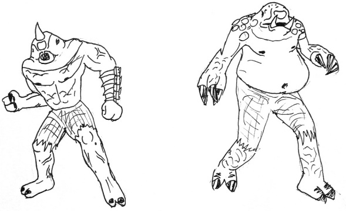
Blind Ones
They are the ancient ancestors
of the Flesh Eaters that live in the subterranians caves of the
Hollows. As evolution would have it, these guys have lost their sight
and their skin has lost the protection against sunlight. But they have
gained superb hearing and thermal sensation and will go to the surface
at night to eat the flesh of warm human victims. (I'm considering
whether or not to make any of their sensory issues a gameplay factor)
What they lack in sophisticated armor and weaponry, they make for with
accuracy and ferocity.
Sentinel
Guardian
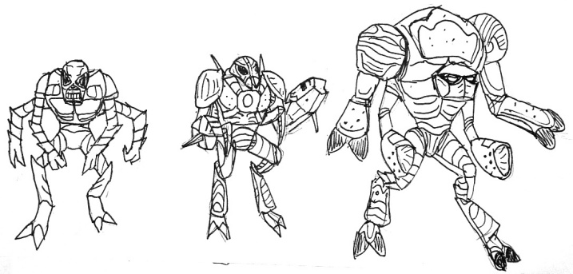
Mantids
Alien Infantry
Drone
Soldier
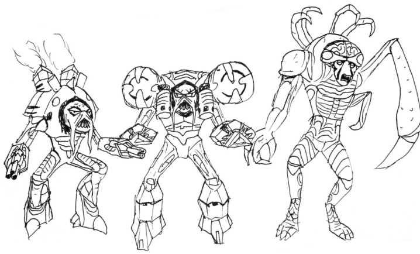
Primagen's Forces
Trooper
Elite Guard
Primagen
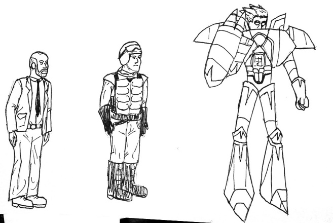
Rogue Military
Scientist
Military Soldier
Bastille
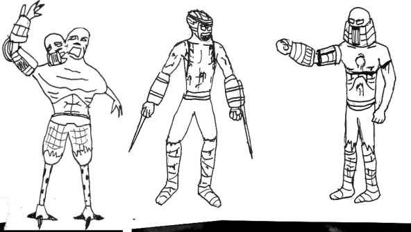
Lost Land
Infestoid
Lost One
Lost Land Guard
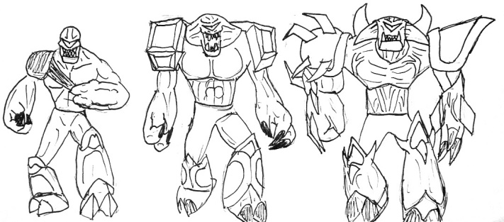
Oblivion
Oblivion Spawn
Death Guard
Lord of the Flesh